Ciężar nie negocjuje. Ty też nie musisz.
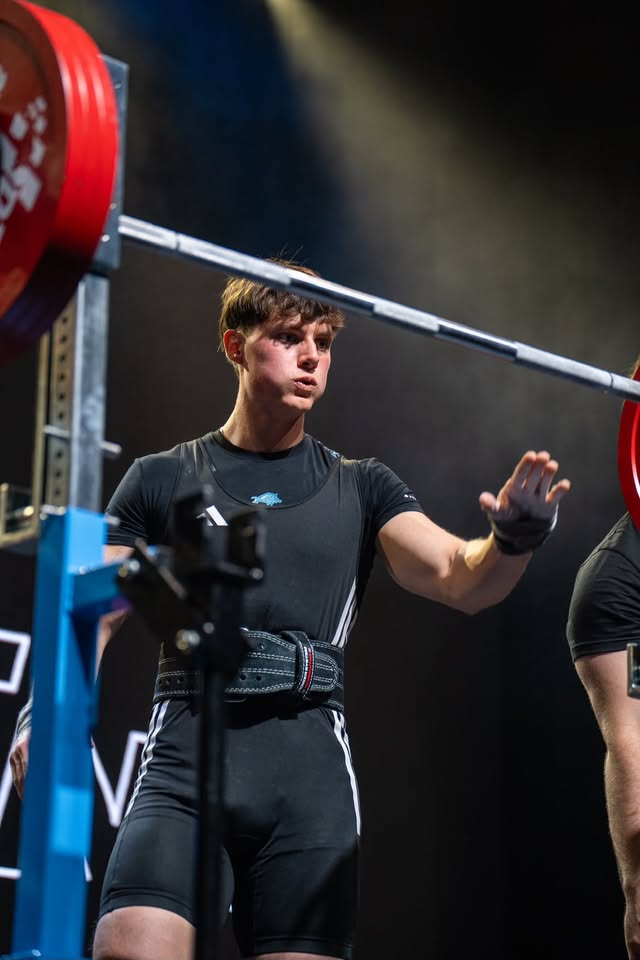
Startuję, więc nie zgaduję
Zacząłem od trójboju: przysiad, wyciskanie, martwy ciąg. Kulturystyka przyszła później i zmusiła mnie do nauki tego, czego siła nie wymaga: cierpliwości przy redukcji, kontroli objętości, uczciwego liczenia jedzenia. Startuję w obu formatach i każdy blok przygotowań przechodzę na własnym ciele przed tym, zanim wpiszę go komukolwiek do planu.
Pracuję z osobami początkującymi i z zawodnikami przed startem. Ten sam sposób prowadzenia: jasny cel, mierzalny postęp, decyzje podejmowane na danych z treningu, a nie na nastroju.
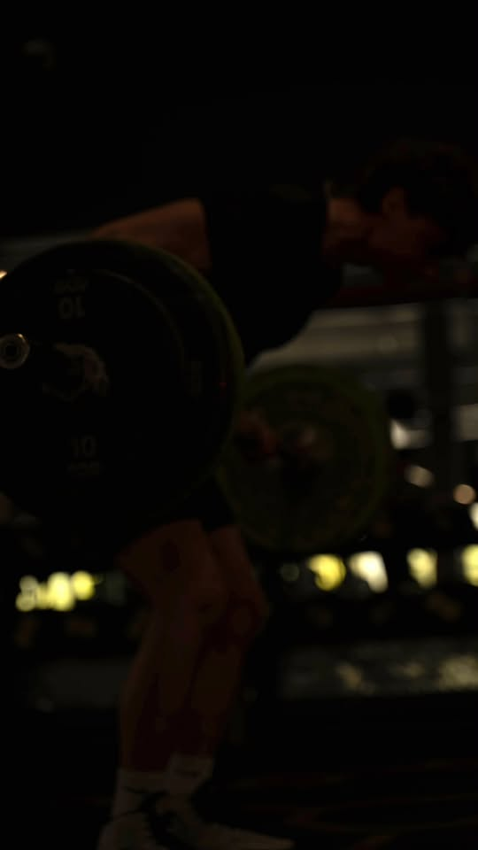
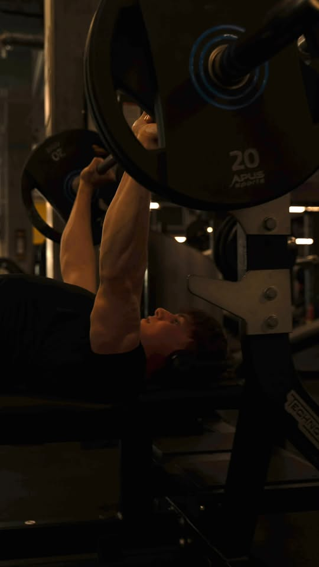
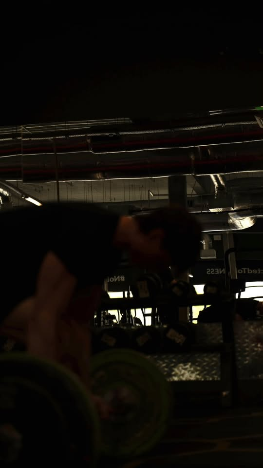
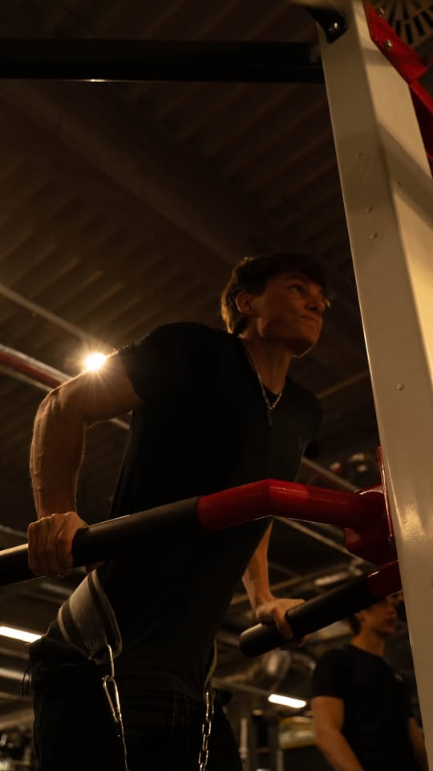
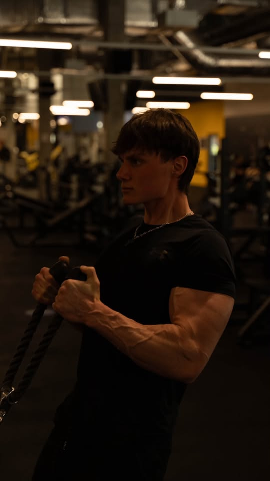
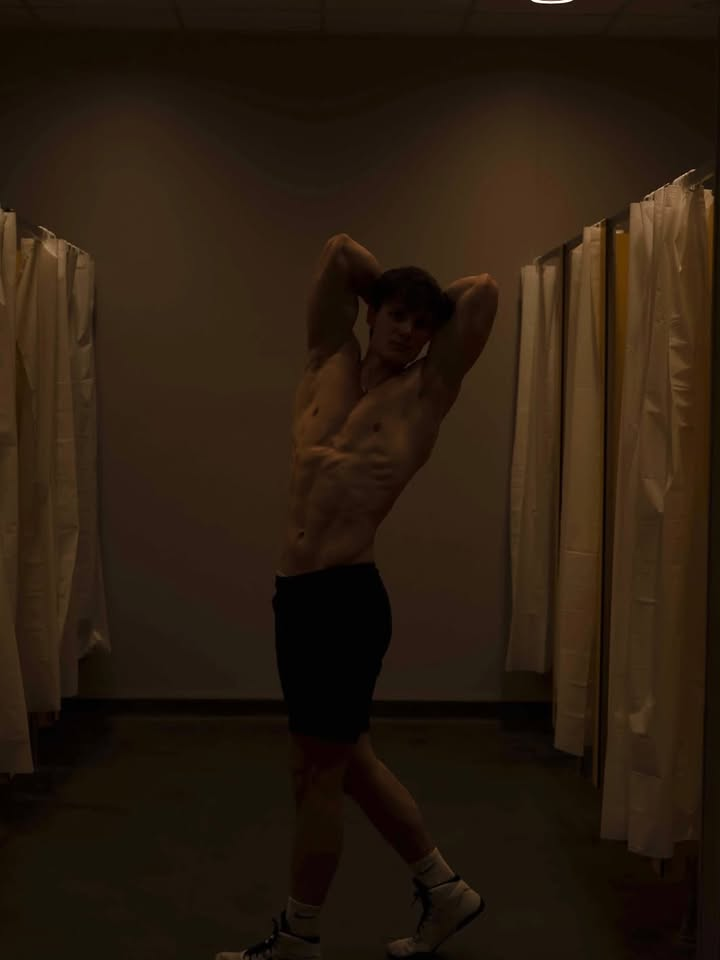
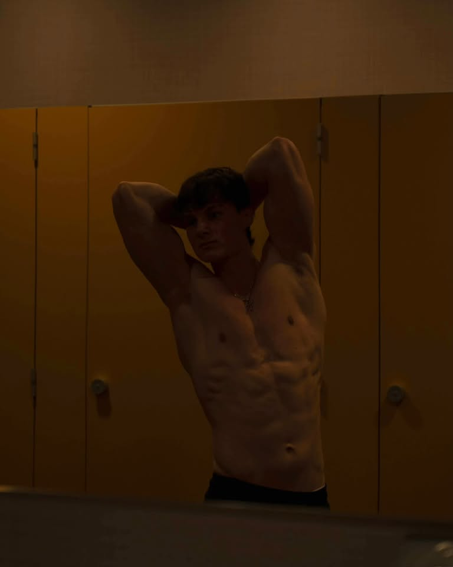
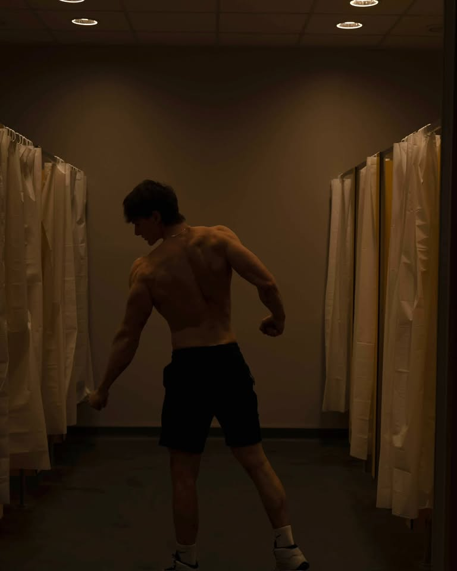
Liczby, nie obietnice
kulturystyka / trójbój
z każdym startem tylko rośnie
Co możesz kupić
- Plany treningowe Cykl pisany pod twój sprzęt, staż i liczbę dni w tygodniu. Progresja rozpisana do końca bloku. od 150–300 złPlan indywidualny
- Plany dietetyczne Masa, redukcja albo przygotowanie startowe. Jedzenie, które da się kupić i ugotować. od 150–300 złPlan indywidualny
- Coaching Online z korektą techniki z wideo albo stacjonarnie w Just Gym Radom. Stały kontakt między treningami. od 300 zł / mies.1 / 3 / 6 MIES.
Miejsce na sesje stacjonarne
Sesje 1:1 prowadzę w Just Gym Radom. Pełny sprzęt do trójboju: monolift, ławki, platformy do martwego ciągu, wolne ciężary bez limitu obciążenia. Bez muzyki na cały regulator i bez kolejki do stojaka.
Jak to wygląda
Zaczynamy od tego, co potrafisz dzisiaj: wideo z trzech ćwiczeń i rozmowa. Bez ankiety na dwadzieścia pytań.
Dostajesz blok treningowy z jasnym celem i zasadą progresji. Wiesz, po co robisz każdą serię.
Raz w tygodniu przeglądamy zapisy z treningów i wideo. Zmiany wprowadzam wtedy, gdy dane je uzasadniają.
Po bloku podsumowanie: co zadziałało, co zostawiamy, co idzie do kosza. Potem kolejny cykl.
Efekty, nie obietnice
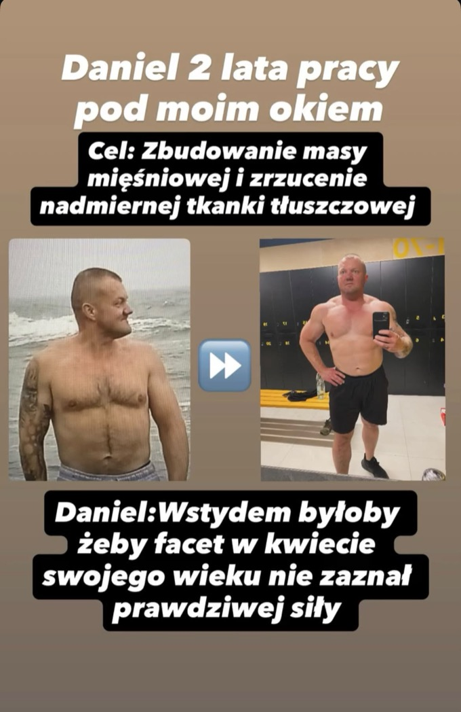
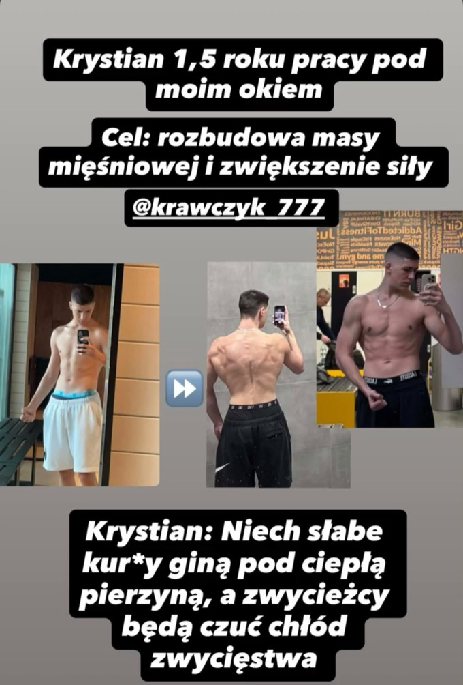
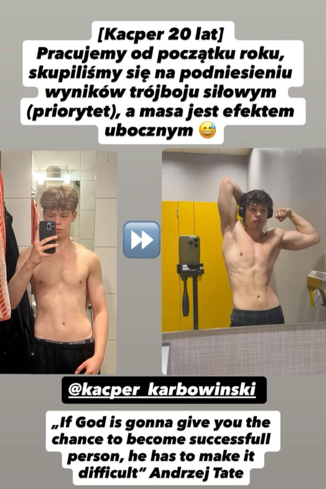
Zanim napiszesz
01 Jak wygląda pierwszy kontakt?
Piszesz na Instagramie albo mailem. Pytam o staż, cel i dostęp do sprzętu, proszę o wideo z trzech ćwiczeń. Na tej podstawie mówię, co realnie da się zrobić.
02 Ile trwa przygotowanie planu treningowego / dietetycznego?
Zwykle kilka dni roboczych od momentu, gdy mam wszystkie informacje i wideo. Termin potwierdzam przed startem.
03 Czy sesje stacjonarne odbywają się tylko w Just Gym Radom?
Tak, tam mam pełny sprzęt do trójboju i stały dostęp. Poza Radomiem prowadzę wyłącznie online.
04 Jak wygląda rozliczenie i płatność?
Przelew z góry za dany okres współpracy. Szczegóły i kwotę ustalamy przed rozpoczęciem, bez ukrytych dopłat.
05 Czy mogę zmienić pakiet coachingu w trakcie współpracy?
Tak, między blokami treningowymi. Zmianę rozliczamy od kolejnego okresu.